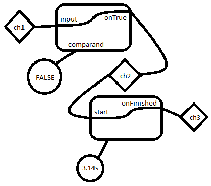

namespace System
namespace System.Threading
namespace System.Collections
namespace System.Collections.Generic
namespace Hopac
module Infixes
from Hopac
from Hopac
type Cell<'a> =
{getCh: Ch<'a>;
putCh: Ch<'a>;}
Full name: Alternatives.Cell<_>
{getCh: Ch<'a>;
putCh: Ch<'a>;}
Full name: Alternatives.Cell<_>
Cell.getCh: Ch<'a>
Multiple items
type Ch<'T> =
inherit Alt<'T>
new : unit -> Ch<'T>
Full name: Hopac.Ch<_>
--------------------
Ch() : unit
type Ch<'T> =
inherit Alt<'T>
new : unit -> Ch<'T>
Full name: Hopac.Ch<_>
--------------------
Ch() : unit
Cell.putCh: Ch<'a>
val put : c:Cell<'a> -> v:'a -> Alt<unit>
Full name: Alternatives.put
Full name: Alternatives.put
val c : Cell<'a>
val v : 'a
val give : Ch<'x> -> 'x -> Alt<unit>
Full name: Hopac.Ch.give
Full name: Hopac.Ch.give
val get : c:Cell<'a> -> Alt<'a>
Full name: Alternatives.get
Full name: Alternatives.get
val take : Ch<'x> -> Alt<'x>
Full name: Hopac.Ch.take
Full name: Hopac.Ch.take
val cell : x:'a -> Job<Cell<'a>>
Full name: Alternatives.cell
Full name: Alternatives.cell
val x : 'a
type Job<'T> =
Full name: Hopac.Job<_>
Full name: Hopac.Job<_>
val delay : (unit -> #Job<'x>) -> Job<'x>
Full name: Hopac.Job.delay
Full name: Hopac.Job.delay
val server : ('a -> Alt<'b>)
type Alt<'T> =
inherit Job<'T>
Full name: Hopac.Alt<_>
inherit Job<'T>
Full name: Hopac.Alt<_>
val choose : seq<#Alt<'x>> -> Alt<'x>
Full name: Hopac.Alt.choose
Full name: Hopac.Alt.choose
val start : Job<unit> -> Job<unit>
Full name: Hopac.Job.start
Full name: Hopac.Job.start
val iterateServer : 'x -> ('x -> #Job<'x>) -> Job<unit>
Full name: Hopac.Job.iterateServer
Full name: Hopac.Job.iterateServer
val CompareBool : comparand:bool ref -> input:Alt<'x> -> onTrue:('x -> #Job<unit>) -> onFalse:('x -> #Job<unit>) -> Job<unit>
Full name: Alternatives.CompareBool
Full name: Alternatives.CompareBool
val comparand : bool ref
Multiple items
val ref : value:'T -> 'T ref
Full name: Microsoft.FSharp.Core.Operators.ref
--------------------
type 'T ref = Ref<'T>
Full name: Microsoft.FSharp.Core.ref<_>
val ref : value:'T -> 'T ref
Full name: Microsoft.FSharp.Core.Operators.ref
--------------------
type 'T ref = Ref<'T>
Full name: Microsoft.FSharp.Core.ref<_>
type bool = Boolean
Full name: Microsoft.FSharp.Core.bool
Full name: Microsoft.FSharp.Core.bool
val input : Alt<'x>
val onTrue : ('x -> #Job<unit>)
type unit = Unit
Full name: Microsoft.FSharp.Core.unit
Full name: Microsoft.FSharp.Core.unit
val onFalse : ('x -> #Job<unit>)
val x : 'x
val Delay : duration:TimeSpan ref -> start:Alt<'x> -> stop:Alt<'y> -> onFinished:('x -> #Job<unit>) -> onAborted:('y -> #Job<unit>) -> Job<unit>
Full name: Alternatives.Delay
Full name: Alternatives.Delay
val duration : TimeSpan ref
Multiple items
type TimeSpan =
struct
new : ticks:int64 -> TimeSpan + 3 overloads
member Add : ts:TimeSpan -> TimeSpan
member CompareTo : value:obj -> int + 1 overload
member Days : int
member Duration : unit -> TimeSpan
member Equals : value:obj -> bool + 1 overload
member GetHashCode : unit -> int
member Hours : int
member Milliseconds : int
member Minutes : int
...
end
Full name: System.TimeSpan
--------------------
TimeSpan()
TimeSpan(ticks: int64) : unit
TimeSpan(hours: int, minutes: int, seconds: int) : unit
TimeSpan(days: int, hours: int, minutes: int, seconds: int) : unit
TimeSpan(days: int, hours: int, minutes: int, seconds: int, milliseconds: int) : unit
type TimeSpan =
struct
new : ticks:int64 -> TimeSpan + 3 overloads
member Add : ts:TimeSpan -> TimeSpan
member CompareTo : value:obj -> int + 1 overload
member Days : int
member Duration : unit -> TimeSpan
member Equals : value:obj -> bool + 1 overload
member GetHashCode : unit -> int
member Hours : int
member Milliseconds : int
member Minutes : int
...
end
Full name: System.TimeSpan
--------------------
TimeSpan()
TimeSpan(ticks: int64) : unit
TimeSpan(hours: int, minutes: int, seconds: int) : unit
TimeSpan(days: int, hours: int, minutes: int, seconds: int) : unit
TimeSpan(days: int, hours: int, minutes: int, seconds: int, milliseconds: int) : unit
val start : Alt<'x>
val stop : Alt<'y>
val onFinished : ('x -> #Job<unit>)
val onAborted : ('y -> #Job<unit>)
val y : 'y
val timeOut : TimeSpan -> Alt<unit>
Full name: Hopac.TopLevel.timeOut
Full name: Hopac.TopLevel.timeOut
val ch1 : Ch<int>
Full name: Alternatives.ch1
Full name: Alternatives.ch1
Multiple items
val int : value:'T -> int (requires member op_Explicit)
Full name: Microsoft.FSharp.Core.Operators.int
--------------------
type int = int32
Full name: Microsoft.FSharp.Core.int
--------------------
type int<'Measure> = int
Full name: Microsoft.FSharp.Core.int<_>
val int : value:'T -> int (requires member op_Explicit)
Full name: Microsoft.FSharp.Core.Operators.int
--------------------
type int = int32
Full name: Microsoft.FSharp.Core.int
--------------------
type int<'Measure> = int
Full name: Microsoft.FSharp.Core.int<_>
val ch2 : Ch<int>
Full name: Alternatives.ch2
Full name: Alternatives.ch2
val ch3 : Ch<int>
Full name: Alternatives.ch3
Full name: Alternatives.ch3
val bMoved : bool ref
Full name: Alternatives.bMoved
Full name: Alternatives.bMoved
val delayT : TimeSpan ref
Full name: Alternatives.delayT
Full name: Alternatives.delayT
field TimeSpan.Zero
val unit : unit -> Alt<unit>
Full name: Hopac.Alt.unit
Full name: Hopac.Alt.unit
val forever : Job<unit> -> Job<'a>
Full name: Hopac.Job.forever
Full name: Hopac.Job.forever
val server : Job<Void> -> unit
Full name: Hopac.TopLevel.server
Full name: Hopac.TopLevel.server
val never : unit -> Alt<'x>
Full name: Hopac.Alt.never
Full name: Hopac.Alt.never
val hello : name:string -> Job<unit>
Full name: Alternatives.hello
Full name: Alternatives.hello
val name : string
val job : JobBuilder
Full name: Hopac.TopLevel.job
Full name: Hopac.TopLevel.job
val i : int
val timeOutMillis : int -> Alt<unit>
Full name: Hopac.TopLevel.timeOutMillis
Full name: Hopac.TopLevel.timeOutMillis
val printfn : format:Printf.TextWriterFormat<'T> -> 'T
Full name: Microsoft.FSharp.Core.ExtraTopLevelOperators.printfn
Full name: Microsoft.FSharp.Core.ExtraTopLevelOperators.printfn
val run : Job<'x> -> 'x
Full name: Hopac.TopLevel.run
Full name: Hopac.TopLevel.run
Multiple items
type Thread =
inherit CriticalFinalizerObject
new : start:ThreadStart -> Thread + 3 overloads
member Abort : unit -> unit + 1 overload
member ApartmentState : ApartmentState with get, set
member CurrentCulture : CultureInfo with get, set
member CurrentUICulture : CultureInfo with get, set
member DisableComObjectEagerCleanup : unit -> unit
member ExecutionContext : ExecutionContext
member GetApartmentState : unit -> ApartmentState
member GetCompressedStack : unit -> CompressedStack
member GetHashCode : unit -> int
...
Full name: System.Threading.Thread
--------------------
Thread(start: ThreadStart) : unit
Thread(start: ParameterizedThreadStart) : unit
Thread(start: ThreadStart, maxStackSize: int) : unit
Thread(start: ParameterizedThreadStart, maxStackSize: int) : unit
type Thread =
inherit CriticalFinalizerObject
new : start:ThreadStart -> Thread + 3 overloads
member Abort : unit -> unit + 1 overload
member ApartmentState : ApartmentState with get, set
member CurrentCulture : CultureInfo with get, set
member CurrentUICulture : CultureInfo with get, set
member DisableComObjectEagerCleanup : unit -> unit
member ExecutionContext : ExecutionContext
member GetApartmentState : unit -> ApartmentState
member GetCompressedStack : unit -> CompressedStack
member GetHashCode : unit -> int
...
Full name: System.Threading.Thread
--------------------
Thread(start: ThreadStart) : unit
Thread(start: ParameterizedThreadStart) : unit
Thread(start: ThreadStart, maxStackSize: int) : unit
Thread(start: ParameterizedThreadStart, maxStackSize: int) : unit
Thread.Sleep(timeout: TimeSpan) : unit
Thread.Sleep(millisecondsTimeout: int) : unit
Thread.Sleep(millisecondsTimeout: int) : unit
val p1 : Promise<unit>
Multiple items
type Promise<'T> =
inherit Alt<'T>
new : tJ:Job<'T> -> Promise<'T> + 2 overloads
member Full : bool
Full name: Hopac.Promise<_>
--------------------
Promise(tJ: Job<'T>) : unit
Promise(value: 'T) : unit
Promise(e: exn) : unit
type Promise<'T> =
inherit Alt<'T>
new : tJ:Job<'T> -> Promise<'T> + 2 overloads
member Full : bool
Full name: Hopac.Promise<_>
--------------------
Promise(tJ: Job<'T>) : unit
Promise(value: 'T) : unit
Promise(e: exn) : unit
val start : Job<'x> -> Job<Promise<'x>>
Full name: Hopac.Promise.start
Full name: Hopac.Promise.start
val p2 : Promise<unit>
val read : Promise<'x> -> Alt<'x>
Full name: Hopac.Promise.read
Full name: Hopac.Promise.read
val conIgnore : seq<#Job<'b>> -> Job<unit>
Full name: Hopac.Job.conIgnore
Full name: Hopac.Job.conIgnore
Using Alternatives
1: 2: 3: |
|
Using Alternatives
1: 2: 3: 4: 5: 6: 7: 8: 9: 10: |
|
Using Alternatives
1: 2: 3: 4: 5: 6: 7: |
|
Kismet


Compare Bool
Compare Bool
1: 2: 3: 4: 5: 6: 7: 8: 9: |
|
Delay
1: 2: 3: 4: 5: |
|
Delay
1: 2: 3: 4: 5: 6: 7: 8: 9: |
|
Wiring it together

1: 2: 3: 4: 5: 6: 7: 8: 9: 10: 11: 12: 13: 14: |
|
Waiting for Jobs
1: 2: 3: 4: 5: 6: 7: 8: 9: 10: 11: |
|
|
Waiting for a Promise
1: 2: 3: 4: 5: 6: 7: |
|
|
Waiting for a Promise
1: 2: 3: 4: 5: 6: 7: 8: 9: 10: 11: 12: |
|
|
Waiting for multiple jobs
1: 2: 3: 4: |
|
|